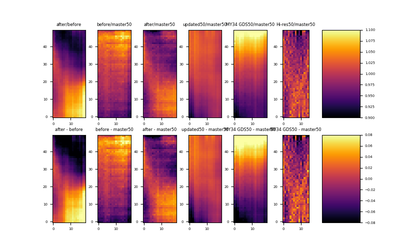

Note
Click here to download the full example code
MUV Flatfield Comparison¶
Plot MUV flatfield ratios
Out:
/home/kyle/repos/PyUVS/venv/lib/python3.9/site-packages/statsmodels/compat/pandas.py:65: FutureWarning: pandas.Int64Index is deprecated and will be removed from pandas in a future version. Use pandas.Index with the appropriate dtype instead.
from pandas import Int64Index as NumericIndex
import matplotlib.pyplot as plt
import matplotlib.colors as colors
import numpy as np
from pyuvs import load_flatfield_mid_hi_res_pipeline, \
load_flatfield_mid_hi_res_update, load_flatfield_mid_hi_res_my34gds, \
load_flatfield_mid_res_app_flip, load_flatfield_mid_res_no_app_flip, \
load_flatfield_hi_res
def make_scalar_mappable(cmap, vmin, vmax):
norm = colors.Normalize(vmin=vmin, vmax=vmax)
scalar_mappable = plt.cm.ScalarMappable(cmap=cmap, norm=norm)
scalar_mappable.set_array([])
return scalar_mappable, norm
master = load_flatfield_mid_hi_res_pipeline()
update = load_flatfield_mid_hi_res_update()
before = load_flatfield_mid_res_no_app_flip()
after = load_flatfield_mid_res_app_flip()
gds = load_flatfield_mid_hi_res_my34gds()
hires = load_flatfield_hi_res()
# Rescale FF
master50 = np.zeros((50, 19))
gds50 = np.zeros((50, 19))
hires50 = np.zeros((50, 15))
updated50 = np.zeros((50, 19))
for i in range(19):
foo = np.linspace(0, 132, num=50)
bar = np.linspace(0, 132, num=133)
master50[:, i] = np.interp(foo, bar, master[:, i])
gds50[:, i] = np.interp(foo, bar, gds[:, i])
updated50[:, i] = np.interp(foo, bar, update[:, i])
if i < 15:
hires50[:, i] = np.interp(np.linspace(0, 199, num=50),
np.linspace(0, 199, num=200), hires[:, i])
cmap = 'inferno'
font = {'size': 5}
plt.rc('font', **font)
plt.rc({'xtick.labelsize': 5})
fig, ax = plt.subplots(2, 7, figsize=(8, 5))
ax[0, 0].imshow(after / before, cmap=cmap, vmin=0.9, vmax=1.1, origin='lower')
ax[0, 0].set_title('after/before')
ax[0, 1].imshow(before / master50, cmap=cmap, vmin=0.9, vmax=1.1, origin='lower')
ax[0, 1].set_title('before/master50')
ax[0, 2].imshow(after / master50, cmap=cmap, vmin=0.9, vmax=1.1, origin='lower')
ax[0, 2].set_title('after/master50')
ax[0, 3].imshow(updated50 / master50, cmap=cmap, vmin=0.9, vmax=1.1, origin='lower')
ax[0, 3].set_title('updated50/master50')
ax[0, 4].imshow(gds50 / master50, cmap=cmap, vmin=0.9, vmax=1.1, origin='lower')
ax[0, 4].set_title('MY34 GDS50/master50')
ax[0, 5].imshow(hires50 / master50[:, :15], cmap=cmap, vmin=0.9, vmax=1.1,origin='lower')
ax[0, 5].set_title('Hi-res50/master50')
sm, _ = make_scalar_mappable(cmap, vmin=0.9, vmax=1.1)
plt.colorbar(sm, cax=ax[0, 6], aspect=50)
ax[1, 0].imshow(after - before, cmap=cmap, vmin=-0.08, vmax=0.08, origin='lower')
ax[1, 0].set_title('after - before')
ax[1, 1].imshow(before - master50, cmap=cmap, vmin=-0.08, vmax=0.08, origin='lower')
ax[1, 1].set_title('before - master50')
ax[1, 2].imshow(after - master50, cmap=cmap, vmin=-0.08, vmax=0.08, origin='lower')
ax[1, 2].set_title('after - master50')
ax[1, 3].imshow(updated50 - master50, cmap=cmap, vmin=-0.08, vmax=0.08, origin='lower')
ax[1, 3].set_title('updated50 - master50')
ax[1, 4].imshow(gds50 - master50, cmap=cmap, vmin=-0.08, vmax=0.08, origin='lower')
ax[1, 4].set_title('MY34 GDS50 - master50')
ax[1, 5].imshow(hires50 - master50[:, :15], cmap=cmap, vmin=-0.08, vmax=0.08, origin='lower')
ax[1, 5].set_title('MY34 GDS50 - master50')
sm, _ = make_scalar_mappable(cmap, vmin=-0.08, vmax=0.08)
plt.colorbar(sm, cax=ax[1, 6], aspect=0.5)
plt.show()
Total running time of the script: ( 0 minutes 1.059 seconds)